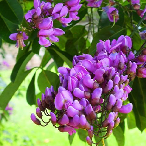
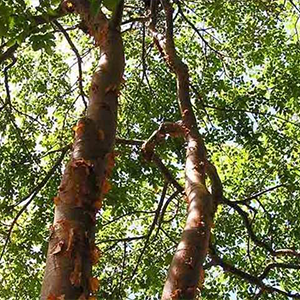
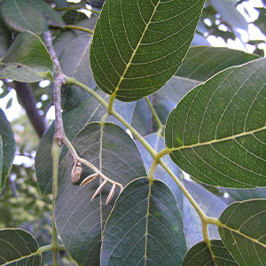
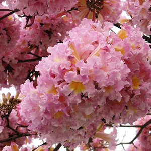

Árbol de hasta 10 mts. de altura, con follaje denso y redondeado;
las flores de color lila-morado muy llamativas, florea de noviembre
a enero; los frutos son vainas planas de hasta 10 cm. largo por 4 de ancho.
Especie endémica de la Península de Yucatán, es usado como ornamental.
Es un Árbol sagrado de los mayas, de la corteza y por medio de fermentación
se obtiene una bebida alcohólica llamada "balché" usado en actos rituales.
Árbol de hasta 15 mts. de altura, con el tronco recto, escamoso
y muy ramificado en la copa; las flores son pequeñas de color
crema-verdoso muy aromática, florea de febrero a mayo; los frutos
son cápsulas drupáceas de 1 a 1.5 cm., es una especie caducifolia.
Especie muy usado como cerca viva, como medicina tradicional para dar
baños curativos y del tronco se hacen artesanías.
Árbol que alcanza hasta 20 m. de altura, caducifolio, copa densa,
corteza fisurada, hojas ovadas compuestas imparipinnadas, foliolos
elípticos verde oscuros, flores en panículas ligeramente perfumadas,
pétalos rosados o ligeramente morados florea de febrero a mayo,
frutos en forma de vaina con alas de color café y alargados quebradizos
al madurar.
Apreciada en la apicultura ya que dura 4 meses en floración y produce
néctar, es forrajera, sus hojas se usan como sedante y para trastornos
respiratorios, su madera es de buena calidad.

Árbol de hasta 15 mts. de altura, el tronco es recto y fisurado y la copa
piramidal; las flores son de color rosa-morado, muy vistosas, dispuestas
al final de las ramas; los frutos son cápsulas de 30 a 40 cms. de largo,
ligeramente retorcidos.La madera es usada para las construcciones rurales. Es muy llamativo
como ornamental.
